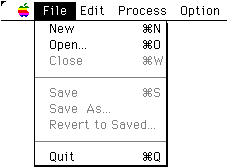
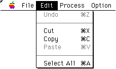
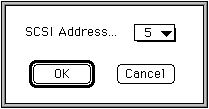

★SOUND Manual
★SCSP/DSPアセンブラユーザーズマニュアル
★SOUND Manual
★SCSP/DSPアセンブラユーザーズマニュアル

注 意 |
dAsmsにおいては、ファイル名の拡張子によって関係ファイルの属性を管理(Windows版を考慮)しています。 このため、ソースコードについては拡張子「.USC」が付けられていなければなりません。 この拡張子が付けられていないソースファイルに対しては、「Assemble...」コマンドは無効になります。 |
|---|


警 告 |
開発用ハードウエア(ボード)のSCSI IDは、その他に接続されている全てのSCSIデバイスと異なる番号に設定されていなければなりません。 設定に誤りがある場合は、SCSIデバイス上のデータが失われる等の問題が発生する可能性があります。 |
|---|
★SOUND Manual
★SCSP/DSPアセンブラユーザーズマニュアル